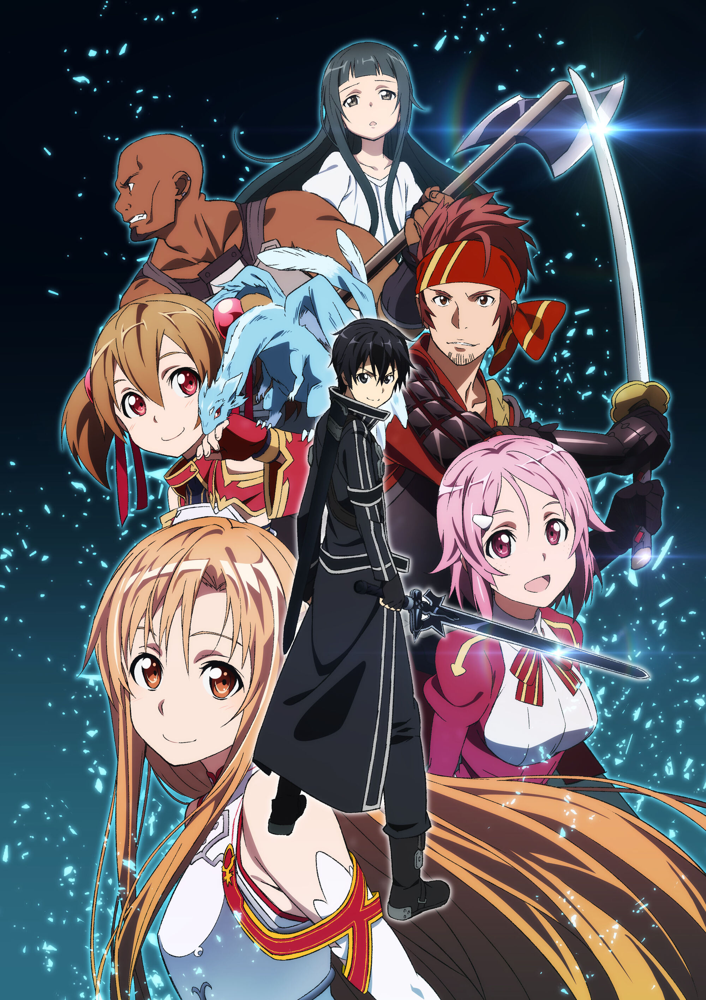

И вот вышла многопользовательская игра нового поколения — игра, где смерть реальна и бегство невозможно. Единственный выход — дойти до конца. А называется игра «Sword Art Online». Не зная этой правды, десять тысяч игроков, используя нейрошлемы компании «Агис», зарегистрировались одновременно и тем самым положили начало смертельной битве, длящейся уже два долгих года. Главный герой Кирито принимает правила игры и не собирается сдаваться. В этом игровом мире, в гигантской парящей крепости под названием Айнкрад, он стал игроком-одиночкой. Чтобы выйти из игры, ему придётся пройти все 100 этажей этого огромного сооружения. Однако, не в силах противостоять настойчивости мастера рапиры Асуны, он начинает работать с ней в паре. Возможно, эта встреча предопределит судьбу всей игры...
